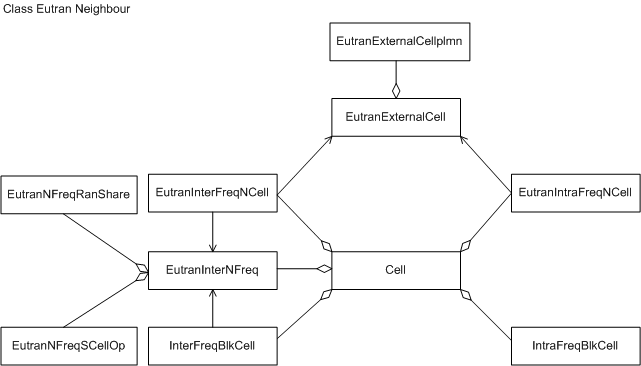
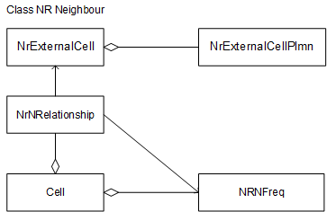
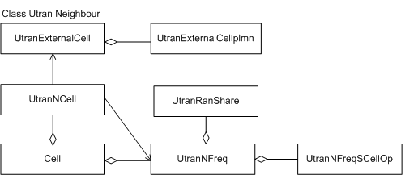
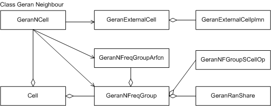
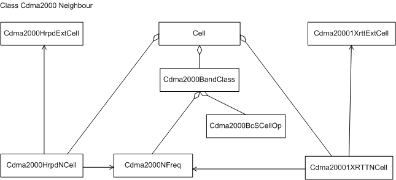

This section describes the functions and concepts of neighboring
cells and neighbor relationships. It illustrates managed object models
(MOMs) and explains managed objects (MOs) related to neighboring cells
and neighbor relationships.
Functions and Concepts
NCL
A neighboring cell list (NCL) of a cell contains information about
inter-eNodeB cells (referred to as external cells). Each cell has
one intra-RAT NCL and multiple inter-RAT NCLs. Based on radio access
technologies (RATs), external cells are classified into evolved terrestrial
radio access network (E-UTRAN) cells, new radio access network (NR) cells, universal terrestrial radio access network (UTRAN) cells, GSM/EDGE
radio access network (GERAN), and CDMA2000 cells.
NRT
A neighboring relation table (NRT) of a cell contains information
about the neighbor relationships of the cell with external cells.
Each cell has one intra-RAT NRT and multiple inter-RAT NRTs. Neighbor
relationships are classified into intra-frequency neighbor relationships
with E-UTRAN cells, inter-frequency neighbor relationships with E-UTRAN
cells, neighbor relationships
with NR cells, neighbor relationships with UTRAN cells,
neighbor relationships with GERAN cells, neighbor relationships with
CDMA2000 High Rate Packet Data (HRPD) cells, and neighbor relationships
with CDMA2000 1x Radio Transmission Technology (CDMA2000 1xRTT) cells.
This document deals with neighbor relationships of a local E-UTRAN
cell with other cells.
Managed Object Model
This section provides
the MOMs for neighboring cells of E-UTRAN cells and also neighbor
relationships of the E-UTRAN cells with other cells. In addition,
this section provides definitions of the MOs in the MOMs.
Managed Object Model for E-UTRAN Cells and Neighbor Relationships
with the Cells
Figure 1 shows the MOM
for E-UTRAN cells and neighbor relationships with the cells. It is
a subset of the eNodeB MOM.
Figure 1 MOM for E-UTRAN cells and neighbor relationships with the cells

The following MOs define E-UTRAN cells and neighbor relationships
with the cells:
- Cell: For details, see Cell and Channel MOM Description.
- EutranExternalCell defines an external E-UTRAN cell. This MO consists of common parameters
of the cell. EutranExternalCell MOs are used for configuring EutranIntraFreqNCell and EutranInterFreqNCell MOs
for one or more cells in the local eNodeB.
- EutranIntraFreqNCell defines the intra-frequency neighbor relationship of the local cell
(defined by a Cell MO) with an
external E-UTRAN cell (defined by an EutranExternalCell MO).
This MO consists of parameters for handovers and reselections from
the local cell to the external cell that has the same downlink E-UTRA
absolute radio frequency channel number (EARFCN) as the local cell.
The handover parameters and cell reselection parameters are included
in measurement configurations and system information block type 4
(SIB4), respectively, that are delivered to UEs.
- IntraFreqBlkCell defines a blacklisted E-UTRAN cell that has the same downlink EARFCN
as the local cell. Handovers and reselections to blacklisted intra-frequency
neighboring E-UTRAN cells are prohibited.
- EutranInterNFreq defines a neighboring E-UTRAN frequency. This MO consists of measurement
control parameters and parameters in system information block type
5 (SIB5) for inter-frequency cell reselections.
- EutranInterFreqNCell defines the inter-frequency neighbor relationship of the local cell
(defined by a Cell MO) with an
external E-UTRAN cell (defined by an EutranExternalCell MO).
This MO consists of parameters for handovers and reselections from
the local cell to the external cell that has a different downlink
EARFCN from that of the local cell. The handover parameters and cell
reselection parameters are included in measurement configurations
and system information block type 5 (SIB5), respectively, that are
delivered to UEs.
- InterFreqBlkCell defines a blacklisted E-UTRAN cell that has a different downlink
EARFCN from that of the local cell. Handovers and reselections to
blacklisted inter-frequency neighboring E-UTRAN cells are prohibited.
- EutranExternalCellPlmn defines a secondary public land mobile network (PLMN) ID of an external
E-UTRAN cell. One to five EutranExternalCellPlmn MOs can be configured under an EutranExternalCell MO that
defines a shared external cell.
- EutranNFreqRanShare defines the parameters related to information about an operator
that shares a neighboring E-UTRAN frequency with other operators.
In RAN sharing scenarios, operator-specific neighboring E-UTRAN frequencies
can be configured as required.
-
- EutranNFreqSCellOp defines cell reselection dedicated priorities for E-UTRAN frequencies
based on the PLMN of the local cell.
Managed
Object Model for Neighboring NR-RAN Cells and Neighbor Relationships
with the Cells
Figure 2 shows the MOM
for neighboring NR-RAN cells and neighbor relationships with the cells.
It is a subset of the eNodeB MOM.
Figure 2 MOM for neighboring NR-RAN cells and neighbor relationships
with the cells

MOs related to neighboring NR-RAN cells and neighbor relationships
with the cells are defined as follows:
- For details about the Cell MO,
see Cell and Channel MOM Description.
- An NrExternalCell defines an external NR-RAN cell. This MO consists of common parameters
of the cell. The NrExternalCell MOs are used for configuring NrNRelationship MOs for one or more cells in the local eNodeB.
- An NrNRelationship MO defines the neighbor relationship of the local cell (defined
by a Cell MO) with an external
NR-RAN cell (defined by an NrExternalCell MO). This MO is used in auxiliary gNodeB addition for LTE-NR NSA
DC and in handover decision between two cells.
- An NRNFreq MO defines a
neighboring NR-RAN frequency. This MO consists of parameters related
to auxiliary gNodeB addition for LTE-NR NSA DC, handovers to NR-RAN,
and cell reselections to NR-RAN.
- An NrExternalCellPlmn MO defines a PLMN ID of an external NR-RAN cell. One to five NrExternalCellPlmn MOs
can be configured under a NrExternalCell MO that defines a shared external cell.
Managed Object Model for UTRAN Cells and
Neighbor Relationships with the Cells
Figure 3 shows the MOM for UTRAN cells and neighbor
relationships with the cells. It is a subset of the eNodeB MOM.
Figure 3 MOM for UTRAN cells and neighbor relationships with the cells

The following MOs define UTRAN cells and neighbor relationships with
the cells:
- Cell: For details, see Cell and Channel MOM Description.
- UtranExternalCell defines an external UTRAN cell. This MO consists of common parameters
of the cell. UtranExternalCell MOs are used for configuring UtranNCell MOs for one or more cells in the local eNodeB.
- UtranNCell defines the
neighbor relationship of the local cell (defined by a Cell MO) with an external UTRAN cell
(defined by a UtranExternalCell MO). This MO consists of parameters for handovers and reselections
from the local cell to the external cell. The handover parameters
and cell reselection parameters are included in measurement configurations
and system information block type 6 (SIB6), respectively, that are
delivered to UEs.
- UtranNFreq defines a
neighboring UTRAN frequency. This MO consists of measurement control
parameters and parameters in SIB6 for inter-RAT cell reselection to
UTRAN.
- UtranExternalCellPlmn defines a secondary PLMN ID of an external UTRAN cell. One to three UtranExternalCellPlmn MOs can be configured under a UtranExternalCell MO that defines a shared external cell.
- UtranRanShare defines
the PLMN IDs of the operators that share a neighboring UTRAN frequency
and also the cell reselection priorities of the frequency.
UtranNFreqSCellOp defines cell reselection dedicated priorities for UTRAN frequencies
based on the PLMN of the local cell.
Managed Object Model
for GERAN Cells and Neighbor Relationships with the Cells
Figure 4 shows the MOM for
GERAN cells and neighbor relationships with the cells. It is a subset
of the eNodeB MOM.
Figure 4 MOM for GERAN cells and neighbor relationships with the cells

The following MOs define GERAN cells and neighbor relationships with
the cells:
- Cell: For details, see Cell and Channel MOM Description.
- GeranExternalCell defines an external GERAN cell. This MO consists of common parameters
of the cell. GeranExternalCell MOs are used for configuring GeranNcell MOs for one or more cells in the local eNodeB.
- GeranNcell defines the
neighbor relationship of the local cell (defined by a Cell MO) with an external GERAN cell
(defined by a GeranExternalCell MO). This MO consists of parameters for handovers from the local
cell to the external cell. The cell identified by the GeranCellId parameter
in a GeranNcell MO must already
be configured in a GeranExternalCell MO.
- GeranNfreqGroup defines
a group of neighboring GERAN carrier frequencies. All frequencies
in the group have the same configuration of this MO. The group configuration
is used in measurement control for inter-RAT handovers to GERAN and
used for cell reselections to GERAN.
- GeranNfreqGroupArfcn defines an absolute radio frequency channel number (ARFCN) in a
group of neighboring GERAN carrier frequencies. This MO is used in
measurement control for inter-RAT handovers to GERAN and used for
cell reselections to GERAN.
- GeranExternalCellPlmn defines a secondary PLMN ID of an external GERAN cell. One to three GeranExternalCellPlmn MOs can be configured under a GeranExternalCell MO that defines a shared external cell.
- GeranRanShare defines
the PLMN IDs of the operators that share a group of neighboring GERAN
carrier frequencies and also the cell reselection priorities of the
group.
- GeranNFGroupSCellOp defines cell reselection dedicated priorities for GERAN frequencies
based on the PLMN of the local cell.
Managed Object Model for CDMA2000 Cells and Neighbor
Relationships with the Cells
Figure 5 shows the MOM for CDMA2000 cells and neighbor relationships
with the cells. It is a subset of the eNodeB MOM.
Figure 5 MOM for CDMA2000 cells and neighbor relationships with the
cells

The following MOs define CDMA2000 cells and neighbor relationships
with the cells:
- CellFor details, see Cell and Channel MOM Description.
- Cdma2000HrpdNcell defines parameters related to the neighboring relation with a CDMA2000
High Rate Packet Data (CDMA2000 HRPD) cell. Neighboring relations
with CDMA2000 HRPD cells are contained in the system information and
measurement control information to facilitate reselection and handover
to a neighboring CDMA2000 HRPD cell, respectively.
- Cdma20001XRTTNcell defines parameters related to neighboring CDMA2000 1xRTT cells.
The parameters are used for handover or cell reselection from E-UTRAN
to CDMA2000 1xRTT cells.
- Cdma2000BandClass defines parameters related to a CDMA2000 band class. It is contained
in system information block type 8 (SIB8) and used in measurement
control for handover and reselection to a CDMA2000 neighboring cell.
- Cdma2000Nfreq defines
parameters about a CDMA2000 frequency. The parameters are mainly used
for handover and reselection. For details, see 3GPP TS 36.331.
- Cdma2000BcSCellOp defines cell reselection dedicated priorities for the CDMA2000 1xRTT
or CDMA2000 HRPD band class based on the PLMN of the local cell.
- Cdma20001XrttExtCell defines parameters related to an external CDMA2000 1xRTT cell. It
provides the common information about neighboring CDMA2000 1xRTT cells.
For details, see 3GPP TS 36.331.
- Cdma2000HrpdExtCell defines parameters related to an external CDMA2000 HRPD cell. It
provides the common information about neighboring CDMA2000 HRPD cells.
For details, see 3GPP TS 36.331.